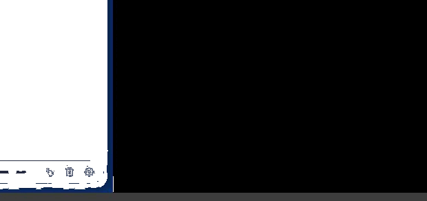

Unleash Your Mac's Canvas.
Transform your tablet into a zero-latency drawing pad over your macOS desktop. Pure transparent overlay.

Engineered for Precision
A native macOS app delivering best-in-class drawing performance across your local network.
Transparent Overlay
Draw seamlessly over any macOS window. The desktop remains fully visible underneath your strokes.
Real-Time Sync
Ultra-low latency WebSocket relay ensures your tablet drawings instantly mirror on the desktop.
Pressure & Tilt
Preserves raw pointer metadata from your stylus, keeping your strokes perfectly nuanced and natural.
Simplicity Built-In
Your tablet is just a browser tab away from becoming a powerful peripheral.
Launch the App
Open Mirrorpad on your Mac. It launches silently into the menu bar.
Connect Tablet
Open the provided local URL in your iPad or tablet's web browser.
Start Drawing
Use the floating HUD to pick your tools. Your strokes instantly appear on the Mac.